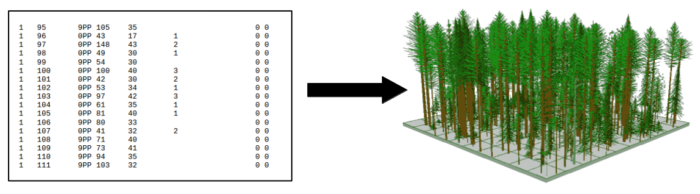

Fvsfuels¶
-
class
fuels.Fvsfuels(variant)[source]¶ Bases:
objectA Fvsfuels object is used to calculate component fuels at the individual tree level using the Forest Vegetation Simulator. To create an instance of this class you need two items: a keyword file (.key) and tree list file (.tre) with the same prefix as the keyword file. If you don’t already have a tree list file then you can use
`fuels.Inventory`class to generate one.Parameters: variant (string) – FVS variant to be imported Example:
A basic example to extract live canopy biomass for individual trees during year of inventory
>>> from standfire.fuels import Fvsfuels >>> stand001 = Fvsfuels("iec") >>> stand001.set_keyword("/Users/standfire/test/example.key") TIMEINT not found in keyword file, default is 10 years >>> stand001.keywords {'TIMEINT': 10, 'NUMCYCLE': 10, 'INVYEAR': 2010, 'SVS': 15, 'FUELOUT': 1}
The keyword file is setup to simulate 100 years at a time interval of 10 years. Lets change this to only simulate the inventory year.
>>> stand001.set_num_cycles(0) >>> stand001.keywords {'TIMEINT': 10, 'NUMCYCLE': 0, 'INVYEAR': 2010, 'SVS': 15, 'FUELOUT': 1} >>> stand001.run_fvs()
Now we can write the trees data frame to disk
>>> stand001.save_trees_by_year(2010)
Note
The argument must match one of the available variant in the PyFVS module. Search through standfire/pyfvs/ to see all variants
-
get_simulation_years()[source]¶ Returns a list of the simulated years
Returns: simulated year Return type: list of integers
-
get_snags(year)[source]¶ Returns pandas data fram of the snags by indexed year
Parameters: year (int) – simulation year of the data frame to return Returns: data frame of snags at indexed year Return type: pandas dataframe Note
If a data frame for the specified year does not exist then a message will be printed to the console.
-
get_standid()[source]¶ Returns stand ID as defined in the keyword file of the class instance
Returns: stand ID value Return type: string
-
get_trees(year)[source]¶ Returns pandas data fram of the trees by indexed year
Parameters: year (int) – simulation year of the data frame to return Returns: data frame of trees at indexed year Return type: pandas dataframe Note
If a data frame for the specified year does not exist then a message will be printed to the console.
-
run_fvs()[source]¶ Runs the FVS simulation
This method run a FVS simulation using the previously specified keyword file. The simulation will be paused at each time interval and the trees and snag data collected and appended to the fuels attribute of the Fvsfuels object.
Example:
>>> from standfire.fuels import Fvsfuels >>> stand010 = Fvsfuels("iec") >>> stand010.set_keyword("/Users/standfire/example/test.key") >>> stand010.run_fvs() >>> stand010.fuels["trees"][2010] xloc yloc species dbh ht crd cratio crownwt0 crownwt1 ... 33.49 108.58 PIPO 19.43 68.31 8.77 25 33.46 4.3 24.3 90.4 PIPO 11.46 56.6 5.63 15 6.55 2.33 88.84 162.98 PIPO 18.63 67.76 9.48 45 75.88 6.89 ...
-
save_all()[source]¶ Writes all data frame in the
fuelsattribute of the class to the specified working directory. Output file are .csv.
-
save_snags_by_year(year)[source]¶ Writes snag data frame at indexed year to .csv in working directory
-
save_trees_by_year(year)[source]¶ Writes tree data frame at indexed year to .csv in working directory
-
set_dir(wdir)[source]¶ Sets the working directory of a Fvsfuels object
This method is called by
Fvsfuels.set_keyword(). Thus, the default working directory is the folder containing the specified keyword file. If you wish to store simulation outputs in a different directory then use this methods to do so.Parameters: wdir (string) – path/to/desired_directory Example:
>>> from standfire.fuel import Fvsfuels >>> test = Fvsfuels("emc") >>> test.set_keyword("/Users/standfire/test/example.key")
Whoops, I would like to store simulation outputs elsewhere...
>>> test.set_dir("/Users/standfire/outputs/")
-
set_inv_year(inv_year)[source]¶ Sets inventory year for FVS simulation
Parameters: inv_year (int) – year of the inventory
-
set_keyword(keyfile)[source]¶ Sets the keyword file to be used in the FVS simulation
Date: 2015-8-12 Authors: Lucas Wells This method will initalize a FVS simulation by registering the specified keyword file (.key) with FVS. The working directory of a Fvsfuels object will be set to the folder containing the keyword file. You can manually change the working directory with Fvsfuels.set_dir(). This function will also call private methods in this class to extract information from the keyword file and set class fields accordingly for use in other methods.
Parameters: keyfile (string) – path/to/keyword_file. This must have a .key extension Example:
>>> from standfire.fuels import Fvsfuels >>> test = Fvsfuels("iec") >>> test.set_keyword("/Users/standfire/test/example.key")
-
set_num_cycles(num_cyc)[source]¶ Sets number of cycles for FVS simulation
Parameters: num_cyc (int) – number of simulation cycles
-
set_stop_point(code=5, year=-1)[source]¶ Set the FVS stop point code and year
Parameters: - code (integer) – stop point code (default=5)
- year (integer) – stop point year (default=-1)
Note
year=0 means never stop and year=-1 means stop every cycle
stop point code Definition 0 Never stop -1 Stop at every location 1 Stop just before first call to Event Monitor 2 Stop just after first call to Event Monitor 3 Stop just before second call to Event Monitor 4 Stop just after second call to Event Monitor 5 Stop after growth and mort has been computed, but before applied 6 Stop just before the ESTAB routine is called
-